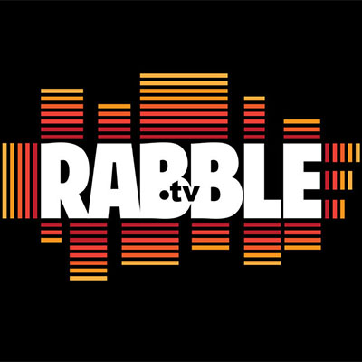

Home Path Financial, LP/Stepping Stone Homes
Operations Coordinator
- Website Administration - updating and troubleshooting company website through WordPress
- Technology - procurement, provisioning and deployment of company equipment (phones, tablets, desktops and laptops), troubleshooting errors and applying updates.
- Corporate Branding - created new logo used on all corporate marketing materials, t-shirts, business cards, folders, etc. using Adobe Illustrator
- Research and integration of Smart Home technologies in new construction homes.

Rabble.tv
Business Development and Creative Brand Manager
- Produced and supervised live audio events involving established comedians (Jen Kirkman, Theo Von) and podcasts (Bitch Sesh, Comedy Film Nerds, Punch Drunk Sports)
- Oversaw and executed outreach and promotion of platform across key social media platforms and in-person networking
- Managed talent partnerships, including contracts, fee negotiation and ad rates
- Procured and distributed creative assets for marketing materials and social media promotion
Sony Pictures Releasing
Manager - National Account Coordinators
- Managed staff of 12 account coordinators responsible for collecting over $500 million in annual revenues
- Researched and reconciled over 200 national theatrical exhibitor accounts including Carmike Cinemas, Marcus Theaters Corp, and the territories of Puerto Rico and Canada
- Supported Sales team to ensure accurate billing terms and advised of problematic accounts
- Assisted with recruiting, hiring and training of new staff
University of Wisconsin-Madison
Major: Communication Arts
Treehouse
TechDegree - Front End Web Development (in progress)